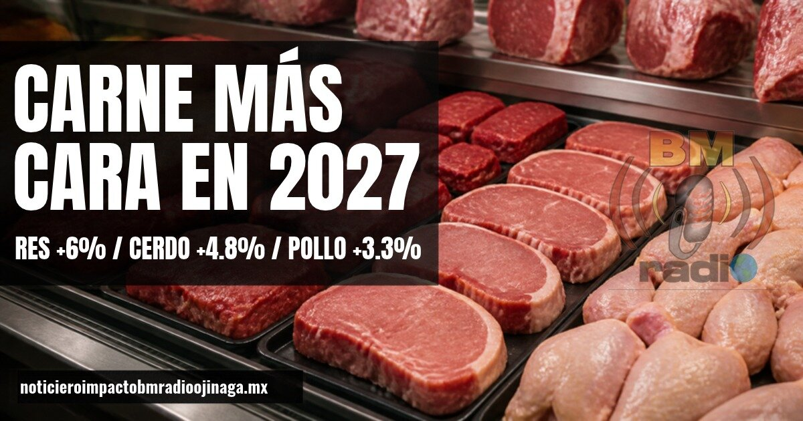

Carne de res, cerdo y pollo subirán de precio en 2027

El Consejo Mexicano de la Carne prevé aumentos para el próximo año: 6% en la carne de res (8 a 15 pesos por kilo), 4.8% en el cerdo (3 a 7 pesos) y 3.3% en el pollo (2 a 5 pesos). Las causas que señala son los costos de energía y producción, la inseguridad en las carreteras y la poca oferta de ganado en Estados Unidos. Además, la exportación de ganado a ese país apenas llega al 2% de lo normal.
Noticiero Impacto BM Radio Ojinaga | noticieroimpactobmradioojinaga.mx